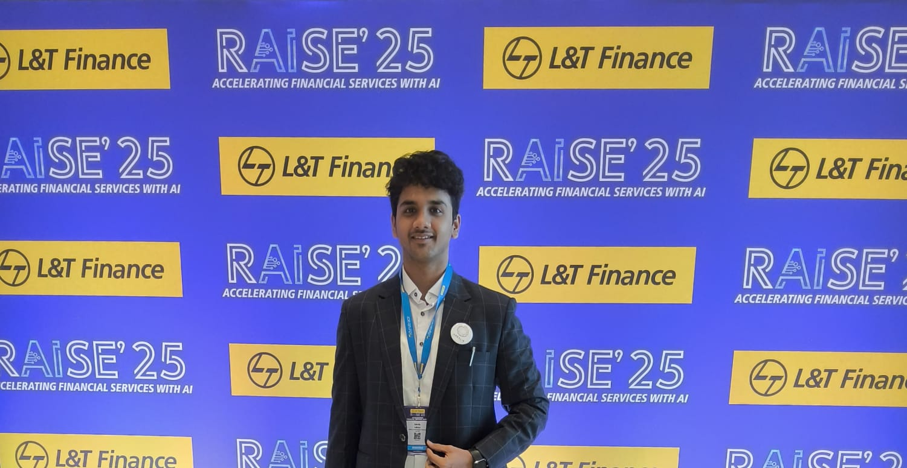

AI & LLMs
QLoRA, RAG, LangChain, LangGraph, Vertex AI, Agentic Workflows
Full Stack AI Engineer
Building intelligent, agentic systems and implementing microservices based architecture to production grade cloud infrastructure.

I'm a 4th-year AI & Data Science student at AISSMS Institute of Information Technology, Pune. I completed my internship as a Full Stack AI Intern at Arealis, Inc. - building multi-agent orchestration systems with DAG-based execution.
My focus is on the intersection of applied LLMs, agentic workflows, and robust cloud infrastructure. I've published research on PEFT techniques and contributed open-source PRs to the Google Gemini CLI.
QLoRA, RAG, LangChain, LangGraph, Vertex AI, Agentic Workflows
FastAPI, Node.js, GCP, Cloud Run, Pub/Sub, Docker, CI/CD
PostgreSQL, Pinecone, Redis, Firestore, MongoDB
React, Next.js, TypeScript, Python, C++, Bash